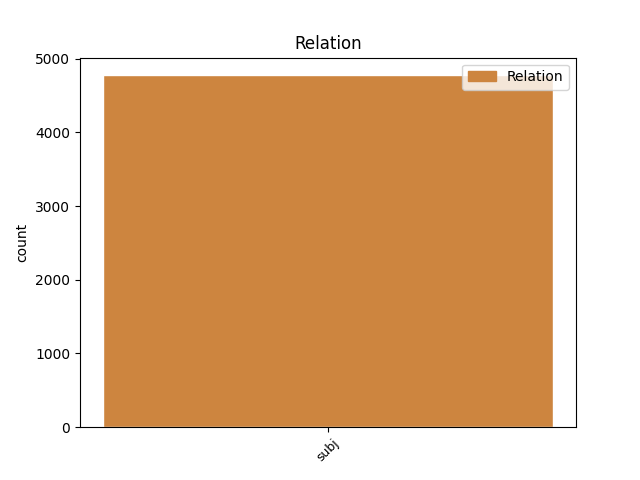
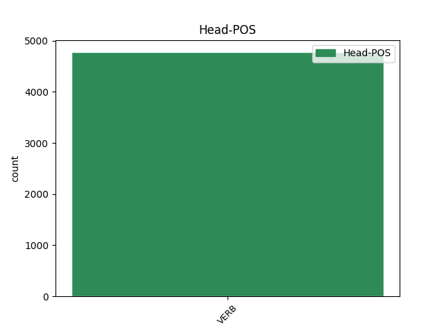
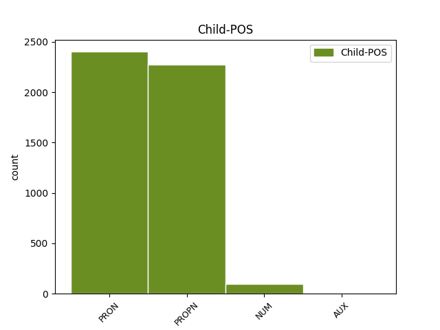

Distribution of features within this leaf



Agreement Rules sorted by frequency.
- When the dependent token is the subject(subj) of the head token, and the head token is VERB and the dependent token is PRON.
1 Нельзя _ _ _ _ 0 _ _ _
2 дорогам _ _ _ _ 0 _ _ _
3 зарастать _ _ _ _ 0 _ _ _
4 , _ _ _ _ 0 _ _ _
5 - _ _ _ _ 0 _ _ _
6 сказал сказать VERB _ Aspect=Perf|Gender=Masc|Mood=Ind|Number=Sing|Tense=Past|VerbForm=Fin|Voice=Act 0 _ _ _
7 он он PRON _ Case=Nom|Gender=Masc|Number=Sing|Person=3 6 subj _ _
8 твердо _ _ _ _ 0 _ _ _
9 . _ _ _ _ 0 _ _ _
1 Одно _ _ _ _ 0 _ _ _
2 красное _ _ _ _ 0 _ _ _
3 перышко _ _ _ _ 0 _ _ _
4 Павлов Павлов PROPN _ Animacy=Anim|Case=Nom|Gender=Masc|Number=Sing 5 subj _ _
5 взял брать VERB _ Aspect=Perf|Gender=Masc|Mood=Ind|Number=Sing|Tense=Past|VerbForm=Fin|Voice=Act 0 _ _ _
6 с _ _ _ _ 0 _ _ _
7 собой _ _ _ _ 0 _ _ _
8 : _ _ _ _ 0 _ _ _
9 он _ _ _ _ 0 _ _ _
10 уже _ _ _ _ 0 _ _ _
11 научил _ _ _ _ 0 _ _ _
12 близнецов _ _ _ _ 0 _ _ _
13 грубости _ _ _ _ 0 _ _ _
14 недоверия _ _ _ _ 0 _ _ _
15 и _ _ _ _ 0 _ _ _
16 потому _ _ _ _ 0 _ _ _
17 нуждался _ _ _ _ 0 _ _ _
18 в _ _ _ _ 0 _ _ _
19 вещественном _ _ _ _ 0 _ _ _
20 доказательстве _ _ _ _ 0 _ _ _
21 . _ _ _ _ 0 _ _ _
1 " _ _ _ _ 0 _ _ _
2 Просто _ _ _ _ 0 _ _ _
3 отдыхали _ _ _ _ 0 _ _ _
4 " _ _ _ _ 0 _ _ _
5 , _ _ _ _ 0 _ _ _
6 - _ _ _ _ 0 _ _ _
7 объяснил объяснить VERB _ Aspect=Perf|Gender=Masc|Mood=Ind|Number=Sing|Tense=Past|VerbForm=Fin|Voice=Act 0 _ _ _
8 репортеру _ _ _ _ 0 _ _ _
9 случившееся _ _ _ _ 0 _ _ _
10 один один NUM _ Case=Nom|Gender=Masc 7 subj _ _
11 из _ _ _ _ 0 _ _ _
12 тех _ _ _ _ 0 _ _ _
13 , _ _ _ _ 0 _ _ _
14 что _ _ _ _ 0 _ _ _
15 остался _ _ _ _ 0 _ _ _
16 в _ _ _ _ 0 _ _ _
17 живых _ _ _ _ 0 _ _ _
18 . _ _ _ _ 0 _ _ _
1 Оказалось оказаться VERB _ Aspect=Perf|Gender=Neut|Mood=Ind|Number=Sing|Tense=Past|VerbForm=Fin|Voice=Mid 0 _ _ _
2 , _ _ _ _ 0 _ _ _
3 поселение _ _ _ _ 0 _ _ _
4 было быть AUX _ Aspect=Imp|Gender=Neut|Mood=Ind|Number=Sing|Tense=Past|VerbForm=Fin|Voice=Act 1 subj _ _
5 основано _ _ _ _ 0 _ _ _
6 толстовцами _ _ _ _ 0 _ _ _
7 в _ _ _ _ 0 _ _ _
8 начале _ _ _ _ 0 _ _ _
9 XX _ _ _ _ 0 _ _ _
10 века _ _ _ _ 0 _ _ _
11 . _ _ _ _ 0 _ _ _
Disagree Examples:
1 О _ _ _ _ 0 _ _ _
2 , _ _ _ _ 0 _ _ _
3 как _ _ _ _ 0 _ _ _
4 это _ _ _ _ 0 _ _ _
5 здорово _ _ _ _ 0 _ _ _
6 , _ _ _ _ 0 _ _ _
7 уж _ _ _ _ 0 _ _ _
8 он _ _ _ _ 0 _ _ _
9 - _ _ _ _ 0 _ _ _
10 то _ _ _ _ 0 _ _ _
11 знает _ _ _ _ 0 _ _ _
12 : _ _ _ _ 0 _ _ _
13 сколько _ _ _ _ 0 _ _ _
14 вечеров _ _ _ _ 0 _ _ _
15 он _ _ _ _ 0 _ _ _
16 провел _ _ _ _ 0 _ _ _
17 дома _ _ _ _ 0 _ _ _
18 один _ _ _ _ 0 _ _ _
19 , _ _ _ _ 0 _ _ _
20 когда _ _ _ _ 0 _ _ _
21 у _ _ _ _ 0 _ _ _
22 него _ _ _ _ 0 _ _ _
23 не _ _ _ _ 0 _ _ _
24 было быть VERB _ Aspect=Imp|Gender=Neut|Mood=Ind|Number=Sing|Tense=Past|VerbForm=Fin|Voice=Act 0 _ _ _
25 ее она PRON _ Case=Gen|Gender=Fem|Number=Sing|Person=3 24 subj _ SpaceAfter=No
26 , _ _ _ _ 0 _ _ _
27 или _ _ _ _ 0 _ _ _
28 бесцельно _ _ _ _ 0 _ _ _
29 слонялся _ _ _ _ 0 _ _ _
30 по _ _ _ _ 0 _ _ _
31 улицам _ _ _ _ 0 _ _ _
32 с _ _ _ _ 0 _ _ _
33 приятелем _ _ _ _ 0 _ _ _
34 , _ _ _ _ 0 _ _ _
35 философствовал _ _ _ _ 0 _ _ _
36 , _ _ _ _ 0 _ _ _
37 рассуждал _ _ _ _ 0 _ _ _
38 о _ _ _ _ 0 _ _ _
39 теории _ _ _ _ 0 _ _ _
40 относительности _ _ _ _ 0 _ _ _
41 и _ _ _ _ 0 _ _ _
42 о _ _ _ _ 0 _ _ _
43 других _ _ _ _ 0 _ _ _
44 приятно _ _ _ _ 0 _ _ _
45 - _ _ _ _ 0 _ _ _
46 умных _ _ _ _ 0 _ _ _
47 вещах _ _ _ _ 0 _ _ _
48 . _ _ _ _ 0 _ _ _
1 Это _ _ _ _ 0 _ _ _
2 была _ _ _ _ 0 _ _ _
3 полуправда _ _ _ _ 0 _ _ _
4 , _ _ _ _ 0 _ _ _
5 но _ _ _ _ 0 _ _ _
6 такая _ _ _ _ 0 _ _ _
7 страшная _ _ _ _ 0 _ _ _
8 , _ _ _ _ 0 _ _ _
9 что _ _ _ _ 0 _ _ _
10 и _ _ _ _ 0 _ _ _
11 ее она PRON _ Case=Gen|Gender=Fem|Number=Sing|Person=3 12 subj _ _
12 хватило хватить VERB _ Aspect=Perf|Gender=Neut|Mood=Ind|Number=Sing|Tense=Past|VerbForm=Fin|Voice=Act 0 _ _ _
13 на _ _ _ _ 0 _ _ _
14 всю _ _ _ _ 0 _ _ _
15 оставшуюся _ _ _ _ 0 _ _ _
16 Советскому _ _ _ _ 0 _ _ _
17 Союзу _ _ _ _ 0 _ _ _
18 жизнь _ _ _ _ 0 _ _ _
19 . _ _ _ _ 0 _ _ _
1 Чтобы _ _ _ _ 0 _ _ _
2 компенсировать _ _ _ _ 0 _ _ _
3 этот _ _ _ _ 0 _ _ _
4 разрыв _ _ _ _ 0 _ _ _
5 , _ _ _ _ 0 _ _ _
6 КГБ КГБ PROPN _ Animacy=Inan|Case=Nom|Gender=Masc|Number=Sing 7 subj _ _
7 организовало организовывать VERB _ Aspect=Perf|Gender=Neut|Mood=Ind|Number=Sing|Tense=Past|VerbForm=Fin|Voice=Act 0 _ _ _
8 обширную _ _ _ _ 0 _ _ _
9 агентурную _ _ _ _ 0 _ _ _
10 сеть _ _ _ _ 0 _ _ _
11 , _ _ _ _ 0 _ _ _
12 поставлявшую _ _ _ _ 0 _ _ _
13 нашей _ _ _ _ 0 _ _ _
14 стране _ _ _ _ 0 _ _ _
15 множество _ _ _ _ 0 _ _ _
16 технологических _ _ _ _ 0 _ _ _
17 секретов _ _ _ _ 0 _ _ _
18 . _ _ _ _ 0 _ _ _
1 Или _ _ _ _ 0 _ _ _
2 его он PRON _ Case=Gen|Gender=Masc|Number=Sing|Person=3 5 subj _ _
3 уже _ _ _ _ 0 _ _ _
4 не _ _ _ _ 0 _ _ _
5 осталось остаться VERB _ Aspect=Perf|Gender=Neut|Mood=Ind|Number=Sing|Tense=Past|VerbForm=Fin|Voice=Mid 0 _ _ _
6 вовсе _ _ _ _ 0 _ _ _
7 ? _ _ _ _ 0 _ _ _
1 Еще _ _ _ _ 0 _ _ _
2 в _ _ _ _ 0 _ _ _
3 феврале _ _ _ _ 0 _ _ _
4 New Нью-Йорк PROPN _ Animacy=Inan|Case=Nom|Gender=Masc|Number=Sing 6 subj _ _
5 Таймс _ _ _ _ 0 _ _ _
6 рассказала рассказать VERB _ Aspect=Perf|Gender=Fem|Mood=Ind|Number=Sing|Tense=Past|VerbForm=Fin|Voice=Act 0 _ _ _
7 историю _ _ _ _ 0 _ _ _
8 о _ _ _ _ 0 _ _ _
9 сделке _ _ _ _ 0 _ _ _
10 , _ _ _ _ 0 _ _ _
11 которую _ _ _ _ 0 _ _ _
12 в _ _ _ _ 0 _ _ _
13 середине _ _ _ _ 0 _ _ _
14 90-х _ _ _ _ 0 _ _ _
15 заключила _ _ _ _ 0 _ _ _
16 с _ _ _ _ 0 _ _ _
17 банком _ _ _ _ 0 _ _ _
18 JP _ _ _ _ 0 _ _ _
19 Morgan _ _ _ _ 0 _ _ _
20 Италия _ _ _ _ 0 _ _ _
21 . _ _ _ _ 0 _ _ _